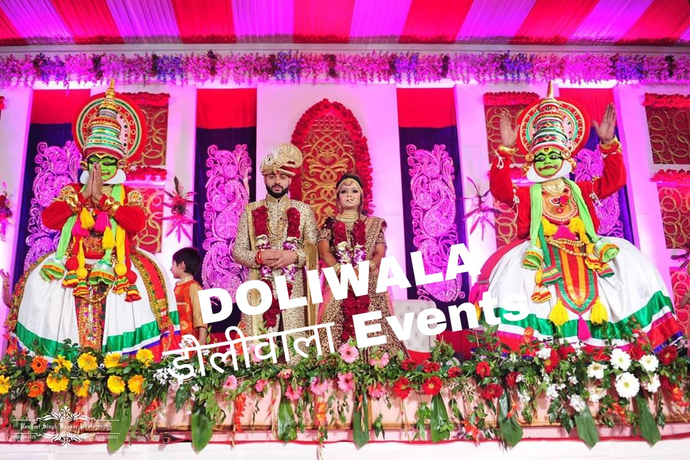

A palki is an ideal way for a bride’s entry. The bride's brothers or uncles use the palki to carry her to the wedding scene. The palki can be made of metal, cushion, wood, fabric, or other materials. If you are looking for something traditional or contemporary, you are at the right place.
Doli for bride’s vidaai
During the Vidaai ceremony, the Indian bride leaves her home in a doli. According to Indian wedding tradition, the bride throws puffed rice on her head, which the bride's mother catches with her trailing sari. This ritual is important for leaving good wishes for parents.
India brides/daughters are considered to be a manifestation of Goddess Lakshmi, the deity of wealth and prosperity. So, upon leaving, the bride practices the ritual to keep wealth and prosperity intact in her home. This is the most emotional moment of the entire wedding ceremony, when family and friends say goodbye to the bride with tears in their eyes. With this they also bless them with a happy married life.
Bride and Groom Entry Concept
A bride dreams of making a stunning bridal procession on her wedding day. And why not! After all, it's one of the few important moments of a wedding when all eyes are on the bride. Everyone from the guests to the groom eagerly awaits to see the bride in her bridal glory for the first time. That's why a bride needs to make sure her wedding entrance is unique and dreamy. Staying true to traditional wedding entrance ideas, some brides still walk down the aisle to the tune of "Din Shagna Da”,while some become real and arrive as real Maharanis in impressive palkis and raths, others take the fun factor up a notch by appearing in golf carts, rickshaws and bicycles. In fact, we've even seen some daring brides who have pushed aside their inhibitions and made an elegant wedding entrance by dancing to the mandap. That sounds interesting, doesn't it?

Jaimala Theme
A Jaimala is an Indian wedding garland that represents the well-liked wedding ritual. The Jaimala may be decorated with rose flowers or other ceremonial items in accordance with local customs.